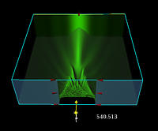
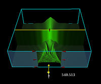
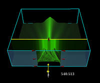
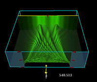
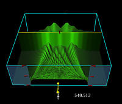

The images below depict the irradiance patterns produced when a monochromatic plane
wave of wavelength ' ' is normally incident
upon a single slit of width 'W'. 'z' is the distance from the aperture plane to the
observation plane. The Fresnel number 'NF' is defined as
' is normally incident
upon a single slit of width 'W'. 'z' is the distance from the aperture plane to the
observation plane. The Fresnel number 'NF' is defined as
In this group of pictures the wavelength and slit width are held constant at 540 nm and 300 microns respectively, and 'z' is varied.
|
 z = 100,000 microns, NF = 0.417 |
 z = 41,683 microns, NF = 1.00 |
|
 z = 20,857 microns, NF = 2.00 |
In this group of pictures the wavelength and the slit width are held constant at 540 microns and 600 microns respectively, and 'z' is varied.
|
 z = 83,170 microns, NF = 2.00 |
 z = 55,371 microns, NF = 3.00 |
 z = 41,550 microns, NF = 4.00
|

Created
by Srihari Angaluri and Kiril Vidimce
Send comments to comments@webtop.org